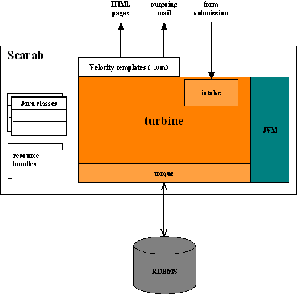

This document is meant to help you:
Scarab uses directly or indirectly (Velocity) the Java programming language and platform. Java has native support for Unicode, which can display and handle all human languages in current use plus a few others, so it seems that the i18n question is a simple question of translation, right ?
The crude reality is that software currently used by Scarab or to communicate with Scarab (operating systems, database management systems, web browsers, mail clients,... ) have poor, immature or incomplete Unicode support. So, there is no unique and general solution, and to provide i18n support compatible with the tools most users use, we are compelled for now to encode/decode incoming and outgoing streams of information.
To understand how to set up Scarab to be used with a language other than American/English, you need to have at least a general idea of what is going on inside the black box.

Scarab as a web application relies heavily on an open source framework called turbine. Two parts of turbine that are of interest to you as the administrator of an international version are intake (the parameter processing part) and torque (the object/relational mapping and persistence layer).
Using this internal machinery, Scarab delivers web pages and email messages (output) and accepts form submissions (input).
Issue and module data plus a lot of other things necessary to Scarab operation are stored in a database (MySQL, Postgresql and Oracle have been used so far).
Scarab screens are designed and stored as a set of Velocity templates (*.vm files). These templates have been made "i18n-ready" by the development team using one of the standard Java mechanisms for internationalization: resource bundles.
The resource bundles are located under src/i18n and are named ScarabBundle_la_CC.properties, where la is a valid language code (as usual in Java and according to ISO-639, see here) and CC a valid country code (as usual in Java and according to ISO-3166, see here).
So if you want Java to speak your language and nobody provided the necessary resources until then, you must provide a resource bundle corresponding to your language. This resource bundle must be encoded according to Unicode; but be careful that the Java APIs only handle ASCII/ISO-Latin 1, so characters that are not in the range \u0000-\u00ff must use the java notation for Unicode characters \uxxxx. If your language contains a lot of non-ASCII, non-Latin characters, it may not be practical for you to edit the resource bundle in this form; you may consider using an editor with your own encoding and convert the file to the "canonical" form at the end. On the Win32 platform, you may use the native2ascii JDK tool for this final conversion.
If you set up a Scarab installation for a language which cannot be written using ISO-Latin1, you should uncomment and give a proper value to the locale.default.charset key in the src/conf/Scarab.properties file (a file which most users should not edit).
Scarab will attempt to deliver the UI in the user language using the browser preferences (a turbine feature). If a resource bundle is found that matches the user preferences, the UI is delivered in this language. If no resource bundle can be found that matches the user preferences, UI is delivered in American/English (en_US).
What about email messages ? It isn't that obvious... In fact, their sending is triggered by an action performed by a user (such as changing an attribute) and they are sent in this user preferred language. If all users of a given Scarab instance have the same language preferences, which is probably the normal case, the email messages are sent in their (common) language and this is usually not an issue.
The question of (character) encoding is more sensitive for email messages than it is for screen templates (because Unicode support in current email clients often varies between insufficient and inexistent). If you are setting up a Scarab installation for a non-Latin language, you should have a look at the I18N section of the build/default.properties file and give an appropriate value to the scarab.email.encoding key in your build.properties file
It is pretty obvious that Scarab delivers the issue information in the language in which they were entered.
One thing that you can change as a translator is the language of the default and sample data that may be loaded at installation time. For this, you must provide a second, much shorter, resource bundle called InitDbScarabBundle_la_CC.properties.
So you understand now why the runbox, for instance, delivers contents to every user in his/her own language (if the appropriate resource bundle is present of course). This does not mean that a particular instance of Scarab is configured to handle data in all languages on earth. The runbox, to continue with the example, is not properly configured to handle and store Russian, Korean or Japanese data -- though it is able to deliver the UI in these languages.
The problems with intake handling Chinese or Korean seem to have been solved by now; there remains the question of storing non-Latin characters in the database. If you plan to use a language which cannot be encoded with ISO-Latin1, you should have a look at the I18N section of the build/default.properties file and give an appropriate value to the scarab.database.encoding.querystring key in your build.properties file.
Original text by Jean-Francois El Fouly
Last revision: $Date: 2003/01/16 12:56:45 $